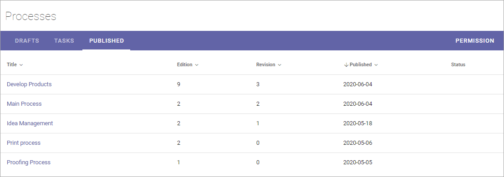
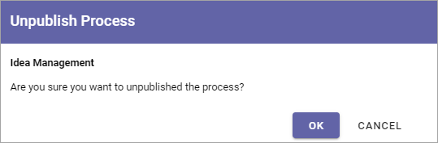

Working with published processes¶
The Published tab lists the latest edition of all published processes from this Processes library.
All options are found in the dot menu for a process:

Create Draft¶
You can create a new Draft from a published process and start working on the new edition when you need it. The existing edition is still available for users until it’s replaced, when the new edition is published.
For more information on how to create a new draft, see: Create a new draft from a published process
View Process¶
Use this option to go the page set up to where end users can acccess the process. If no page has been set up yet, the process is shown on a system fallback page.
Feedback¶
An Action Button can be set up to make it possible for users to send feedback on a process. Such feedback will be sent to the process owner and will be available through this option.

For more information on how to set upp Action Buttons, see: Action Button
Process History¶
There’s information about each published edition available. To see it, do the following:
Click the dot menu for the process.
Select “Process History”.

Here’s an example:

You can see the publication date for each edition, the author’s comment, if any, and who the process was approved by. You can click the link to view the edition of the process.
Move Process¶
A process can be moved to any other Team Site, if needed. Here’s how:
Go to the target Team Site and copy the Url.
Go to the source Team Saite and click the dot menu for the process.
Select “Move Process”.

Paste Url to the target Team Site, or type the Url if you haven’t copied it.
Click RESOLVE.
If the Url is correct, the name of the target Team Site should now be shown.
Click MOVE.
Unpublish Process¶
If needed, a published process can be unpublished. The process will then not be available for end users. The process is also removed from the Processes library. If an archive for processes has been set up, a copy of the process is placed there. If an archive for processes has not been set up, the process is simply deleted.
Note! A process can’t be unpublished if a draft has been created for that process. The draft must first be deleted.
When “Unpublish” is selected, you get a second chance to change your mind:
